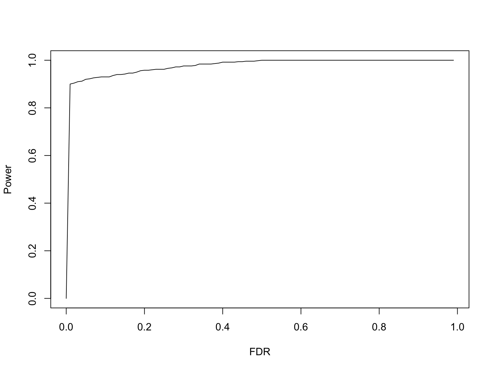
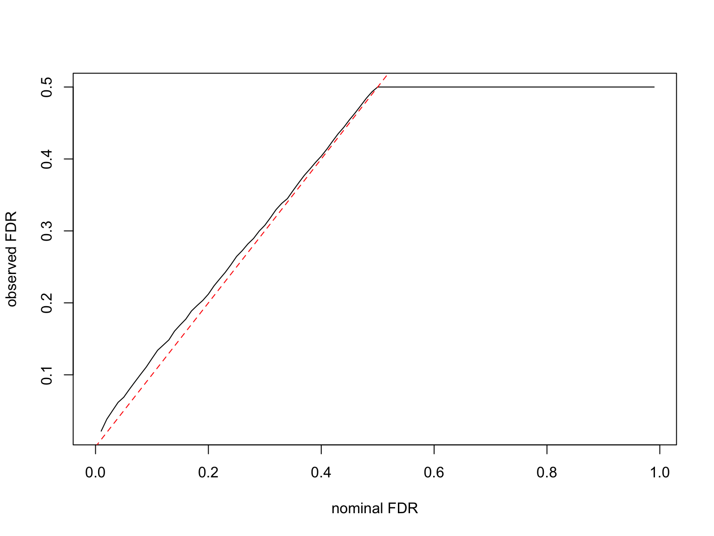
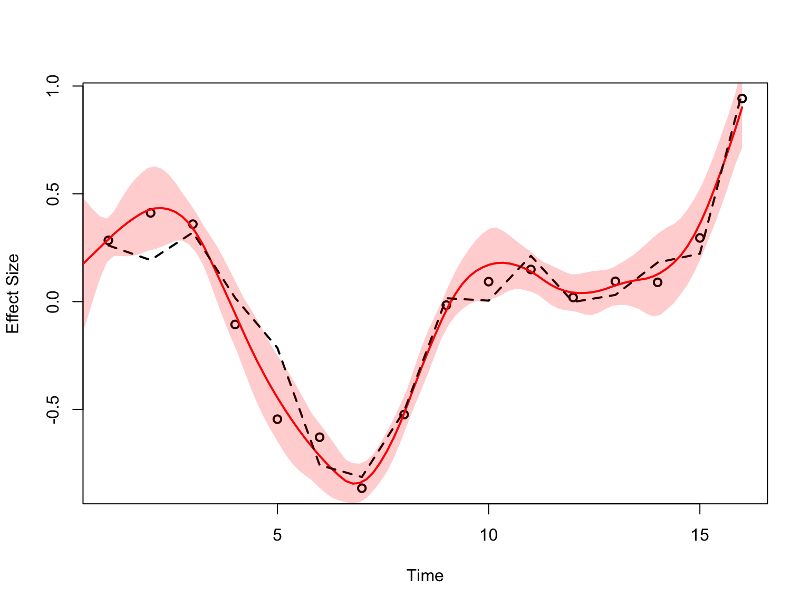
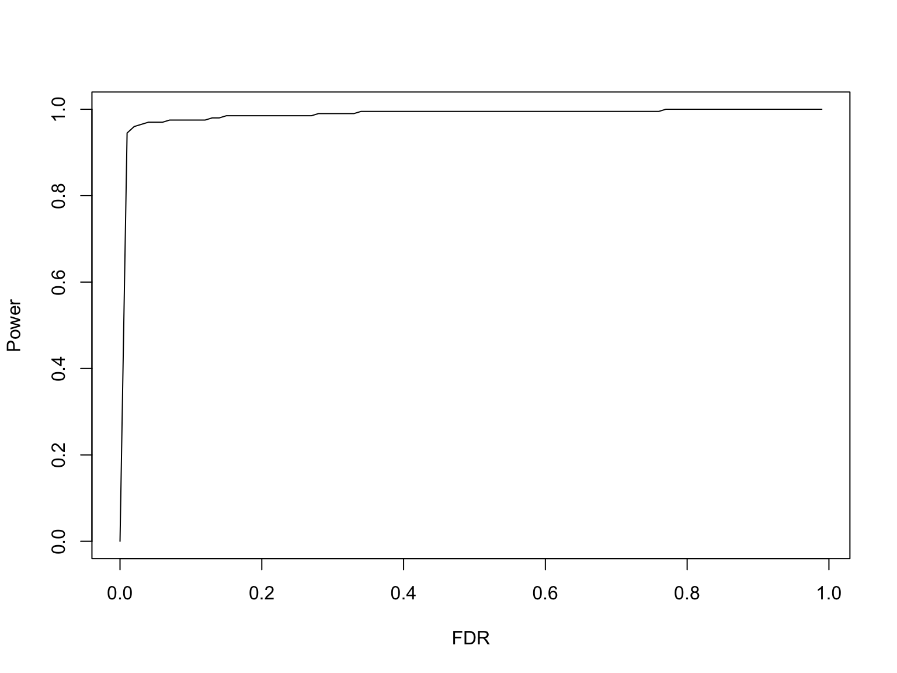
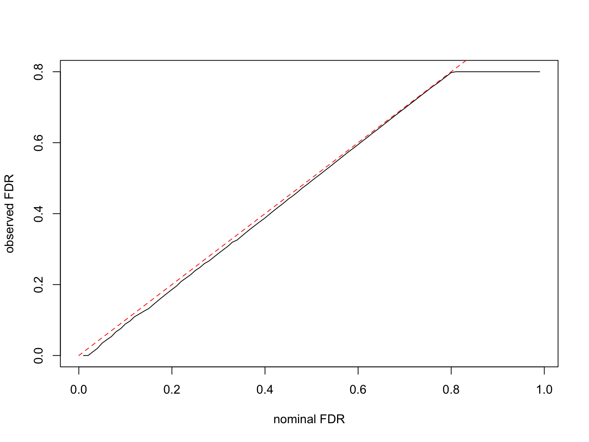
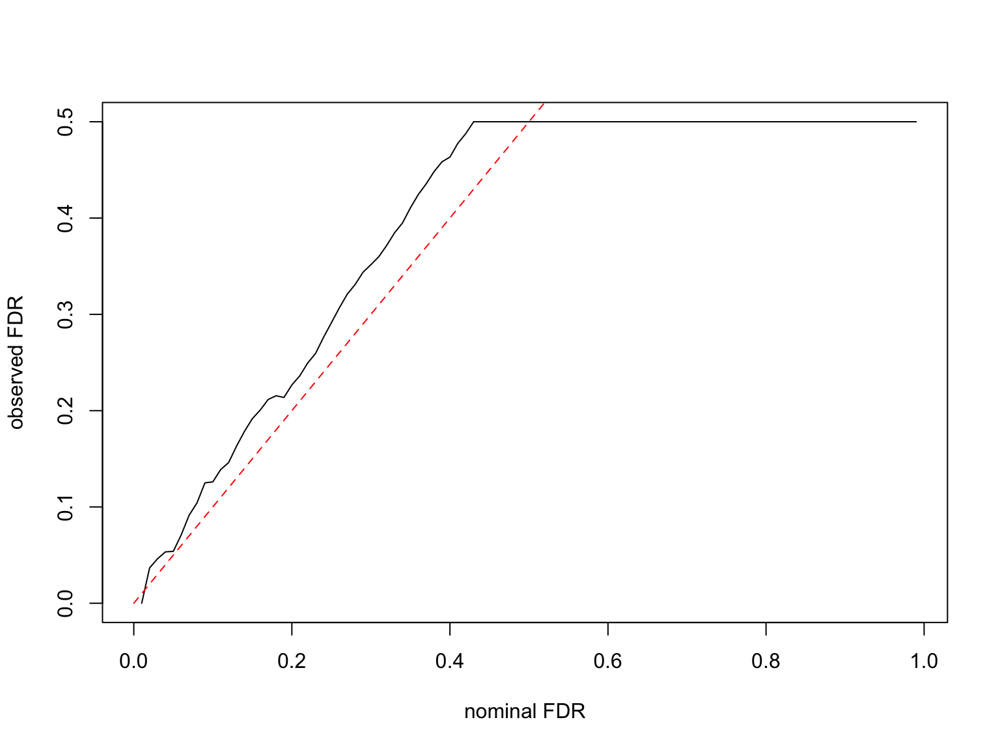
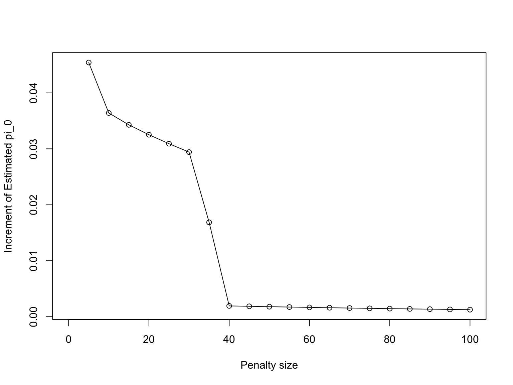

Dynamic eQTL (Simulation)
Ziang Zhang
2025-02-10
Last updated: 2025-02-21
Checks: 7 0
Knit directory: FASHresultsummary/
This reproducible R Markdown analysis was created with workflowr (version 1.7.1). The Checks tab describes the reproducibility checks that were applied when the results were created. The Past versions tab lists the development history.
Great! Since the R Markdown file has been committed to the Git repository, you know the exact version of the code that produced these results.
Great job! The global environment was empty. Objects defined in the global environment can affect the analysis in your R Markdown file in unknown ways. For reproduciblity it’s best to always run the code in an empty environment.
The command set.seed(20240507) was run prior to running
the code in the R Markdown file. Setting a seed ensures that any results
that rely on randomness, e.g. subsampling or permutations, are
reproducible.
Great job! Recording the operating system, R version, and package versions is critical for reproducibility.
Nice! There were no cached chunks for this analysis, so you can be confident that you successfully produced the results during this run.
Great job! Using relative paths to the files within your workflowr project makes it easier to run your code on other machines.
Great! You are using Git for version control. Tracking code development and connecting the code version to the results is critical for reproducibility.
The results in this page were generated with repository version 38f0835. See the Past versions tab to see a history of the changes made to the R Markdown and HTML files.
Note that you need to be careful to ensure that all relevant files for
the analysis have been committed to Git prior to generating the results
(you can use wflow_publish or
wflow_git_commit). workflowr only checks the R Markdown
file, but you know if there are other scripts or data files that it
depends on. Below is the status of the Git repository when the results
were generated:
Ignored files:
Ignored: .DS_Store
Ignored: .Rhistory
Ignored: .Rproj.user/
Ignored: analysis/.DS_Store
Ignored: analysis/.Rhistory
Ignored: code/.DS_Store
Ignored: code/.Rhistory
Ignored: code/cpp/.DS_Store
Ignored: code/function/.DS_Store
Ignored: data/.DS_Store
Ignored: data/Iyer/.DS_Store
Ignored: data/expression_data/.DS_Store
Ignored: output/.DS_Store
Ignored: output/Iyer/.DS_Store
Ignored: output/example/.DS_Store
Ignored: output/example/figure/
Ignored: output/expression/.DS_Store
Ignored: output/simulation_pollution/.DS_Store
Ignored: output/simulation_pollution/figure/
Ignored: output/vQTL_correlated/
Ignored: thought_process
Unstaged changes:
Modified: output/simulation_dynamic_eQTL/fash_fit_1.RData
Modified: output/simulation_dynamic_eQTL/fash_fit_1_noisy.RData
Modified: output/simulation_dynamic_eQTL/fash_fit_2.RData
Modified: output/simulation_dynamic_eQTL/fash_fit_2_noisy.RData
Modified: output/simulation_dynamic_eQTL/fash_fit_2_noisy_pen.RData
Note that any generated files, e.g. HTML, png, CSS, etc., are not included in this status report because it is ok for generated content to have uncommitted changes.
These are the previous versions of the repository in which changes were
made to the R Markdown (analysis/dynamic_eQTL.rmd) and HTML
(docs/dynamic_eQTL.html) files. If you’ve configured a
remote Git repository (see ?wflow_git_remote), click on the
hyperlinks in the table below to view the files as they were in that
past version.
| File | Version | Author | Date | Message |
|---|---|---|---|---|
| Rmd | 38f0835 | Ziang Zhang | 2025-02-21 | workflowr::wflow_publish("analysis/dynamic_eQTL.rmd") |
| Rmd | dce4d69 | Ziang Zhang | 2025-02-11 | update the simulation example |
| html | d3d7043 | Ziang Zhang | 2025-02-11 | Build site. |
| Rmd | 700b688 | Ziang Zhang | 2025-02-11 | workflowr::wflow_publish("analysis/dynamic_eQTL.rmd") |
knitr::opts_chunk$set(fig.width = 8, fig.height = 6)
library(fashr)
result_dir <- paste0(getwd(), "/output/simulation_dynamic_eQTL")Setup
We consider the effect size estimate of \(1000\) eQTLs measured in day \(t = 1\) to day \(t = 16\):
- there are \(500\) eQTLs that are not dynamic, i.e., the effect size is constant over time (Category A).
- there are \(300\) eQTLs that are linear dynamic, i.e., the effect size is changing linearly over time (Category B).
- there are \(200\) eQTLs that are non-linear dynamic, i.e., the effect size is changing non-linearly over time (Category C).
The standard error \(s_{ij}\) is randomly drawn from \(\{0.02, 0.05, 0.1\}\) for each time point \(t = 1, \ldots, 16\).
| Version | Author | Date |
|---|---|---|
| d3d7043 | Ziang Zhang | 2025-02-11 |
Take a look at the true label of the datasets:
table(labels)labels
A B C
500 300 200 Fitting FASH
The default way of fitting FASH is to input the list of datasets
(data_list), and specify the column names for the effect
size (Y), the standard deviation of the effect size
(S), and the time points (smooth_var).
The computation could be paralleled by specifying the number of cores
(num_cores). Reducing the number of basis functions
(num_basis) can also greatly speed up the computation.
Testing dynamic eQTLs
To test which eQTLs are dynamic in their effects (i.e., Categories B and C), we can specify the order of the IWP model to be 1, which will setup a base model \(S_0\) as the space of constant functions.
fash_fit_1 <- fash(Y = "y", smooth_var = "x", S = "sd", data_list = datasets,
likelihood = "gaussian", order = 1, pred_step = 1,
num_cores = 4, num_basis = 20, grid = seq(0, 1, by = 0.025),
verbose = TRUE)
save(fash_fit_1, file = paste0(result_dir, "/fash_fit_1.RData"))Take a look at the fitted prior:
fash_fit_1$prior_weights psd prior_weight
1 0.000 0.49708105
2 0.050 0.07840197
3 0.075 0.04352500
4 0.125 0.20055993
5 0.150 0.01058595
6 0.250 0.05743052
7 0.275 0.11241558Take a look at the structure plot:
plot(fash_fit_1, discrete = T)
| Version | Author | Date |
|---|---|---|
| d3d7043 | Ziang Zhang | 2025-02-11 |
plot(fash_fit_1, discrete = F, ordering = "lfdr")
| Version | Author | Date |
|---|---|---|
| d3d7043 | Ziang Zhang | 2025-02-11 |
Let’s test the null hypothesis that \(H_0: \beta_i(t) \in S_0\) at a given FDR level:
fdr_result_1 <- fdr_control(fash_fit_1, alpha = 0.1, plot = TRUE)530 datasets are significant at alpha level 0.10. Total datasets tested: 1000.
| Version | Author | Date |
|---|---|---|
| d3d7043 | Ziang Zhang | 2025-02-11 |
detected_indices_1 <- fdr_result_1$fdr_results$index[fdr_result_1$fdr_results$FDR < 0.1]Take a look at the power curve:
power1 <- power_versus_fdr(fdr_result_1$fdr_results, c(indices_B,indices_C), fdr_vec = seq(0, 0.99, by = 0.01))
| Version | Author | Date |
|---|---|---|
| d3d7043 | Ziang Zhang | 2025-02-11 |
Take a look at the calibration of FDR:
calibration1 <- calibration_fdr(fdr_result_1$fdr_results, c(indices_B,indices_C), fdr_vec = seq(0, 0.99, by = 0.01))
| Version | Author | Date |
|---|---|---|
| d3d7043 | Ziang Zhang | 2025-02-11 |
Let’s take a look at the inferred eQTL effect \(\beta_i(t)\) for the detected eQTLs.
fitted_beta_new <- predict(fash_fit_1, index = detected_indices_1[1], smooth_var = seq(0, 16, length.out = 100))
plot(datasets[[detected_indices_1[1]]]$x, datasets[[detected_indices_1[1]]]$y, type = "p", col = "black", lwd = 2, xlab = "Time", ylab = "Effect Size")
lines(fitted_beta_new$x, fitted_beta_new$mean, col = "red", lwd = 2)
lines(datasets[[detected_indices_1[1]]]$x, datasets[[detected_indices_1[1]]]$truef, col = "black", lty = 2, lwd = 2)
polygon(c(fitted_beta_new$x, rev(fitted_beta_new$x)), c(fitted_beta_new$lower, rev(fitted_beta_new$upper)), col = rgb(1, 0, 0, 0.2), border = NA)
| Version | Author | Date |
|---|---|---|
| d3d7043 | Ziang Zhang | 2025-02-11 |
Testing non-linearity
Let’s use the IWP2 model (order = 2), and try to detect
the dynamic eQTLs with non-linear dynamics (Category C).
fash_fit_2 <- fash(Y = "y", smooth_var = "x", S = "sd", data_list = datasets,
likelihood = "gaussian", order = 2, pred_step = 1,
num_cores = 4, num_basis = 20, grid = seq(0, 1, by = 0.025),
verbose = TRUE)
save(fash_fit_2, file = paste0(result_dir, "/fash_fit_2.RData"))Let’s take a look at the fitted prior:
fash_fit_2$prior_weights psd prior_weight
1 0.000 0.802180228
2 0.025 0.014604773
3 0.050 0.020404253
4 0.075 0.010816058
5 0.100 0.039275380
6 0.150 0.029605157
7 0.175 0.009133191
8 0.200 0.047313768
9 0.225 0.011543286
10 0.275 0.007575607
11 0.300 0.007548298We can take a look at their posterior weights in each GP component:
plot(fash_fit_2, discrete = TRUE)
| Version | Author | Date |
|---|---|---|
| d3d7043 | Ziang Zhang | 2025-02-11 |
plot(fash_fit_2, discrete = F, ordering = "lfdr")
| Version | Author | Date |
|---|---|---|
| d3d7043 | Ziang Zhang | 2025-02-11 |
We can then use fdr_control to test the null hypothesis
that \(H_0: \beta_i(t) \in S_0\) at a
given FDR level:
fdr_result_2 <- fdr_control(fash_fit_2, alpha = 0.1, plot = TRUE)214 datasets are significant at alpha level 0.10. Total datasets tested: 1000.
| Version | Author | Date |
|---|---|---|
| d3d7043 | Ziang Zhang | 2025-02-11 |
detected_indices_2 <- fdr_result_2$fdr_results$index[fdr_result_2$fdr_results$FDR < 0.1]Let’s take a look at the inferred eQTL effect \(\beta_i(t)\) for the detected eQTLs.
fitted_beta_new <- predict(fash_fit_2, index = detected_indices_2[1], smooth_var = seq(0, 16, length.out = 100))
plot(datasets[[detected_indices_2[1]]]$x, datasets[[detected_indices_2[1]]]$y, type = "p", col = "black", lwd = 2, xlab = "Time", ylab = "Effect Size")
lines(fitted_beta_new$x, fitted_beta_new$mean, col = "red", lwd = 2)
lines(datasets[[detected_indices_2[1]]]$x, datasets[[detected_indices_2[1]]]$truef, col = "black", lty = 2, lwd = 2)
polygon(c(fitted_beta_new$x, rev(fitted_beta_new$x)), c(fitted_beta_new$lower, rev(fitted_beta_new$upper)), col = rgb(1, 0, 0, 0.2), border = NA)
| Version | Author | Date |
|---|---|---|
| d3d7043 | Ziang Zhang | 2025-02-11 |
Take a look at the power curve:
power2 <- power_versus_fdr(fdr_result_2$fdr_results, indices_C, fdr_vec = seq(0, 0.99, by = 0.01))
| Version | Author | Date |
|---|---|---|
| d3d7043 | Ziang Zhang | 2025-02-11 |
Take a look at the calibration of FDR:
calibration2 <- calibration_fdr(fdr_result_2$fdr_results, indices_C, fdr_vec = seq(0, 0.99, by = 0.01))
| Version | Author | Date |
|---|---|---|
| d3d7043 | Ziang Zhang | 2025-02-11 |
Estimation of \(\hat{\pi}_0\) is hard when data is noisy
Now assume the standard error \(s_{ij}\) is fixed at \(0.4\) for each time point \(t = 1, \ldots, 16\).
| Version | Author | Date |
|---|---|---|
| d3d7043 | Ziang Zhang | 2025-02-11 |
fash_fit_1_noisy <- fash(Y = "y", smooth_var = "x", S = "sd", data_list = datasets,
likelihood = "gaussian", order = 1, pred_step = 1,
num_cores = 4, num_basis = 20, grid = seq(0, 1, by = 0.025),
verbose = TRUE)
save(fash_fit_1_noisy, file = paste0(result_dir, "/fash_fit_1_noisy.RData"))fdr_result_1_noisy <- fdr_control(fash_fit_1_noisy, alpha = 0.1, plot = F)238 datasets are significant at alpha level 0.10. Total datasets tested: 1000. detected_indices_1_noisy <- fdr_result_1_noisy$fdr_results$index[fdr_result_1_noisy$fdr_results$FDR < 0.1]
power1_noisy <- power_versus_fdr(fdr_result_1_noisy$fdr_results, c(indices_B, indices_C), fdr_vec = seq(0, 0.99, by = 0.01))
| Version | Author | Date |
|---|---|---|
| d3d7043 | Ziang Zhang | 2025-02-11 |
calibration1_noisy <- calibration_fdr(fdr_result_1_noisy$fdr_results, c(indices_B, indices_C), fdr_vec = seq(0, 0.99, by = 0.01))
| Version | Author | Date |
|---|---|---|
| d3d7043 | Ziang Zhang | 2025-02-11 |
fash_fit_2_noisy <- fash(Y = "y", smooth_var = "x", S = "sd", data_list = datasets,
likelihood = "gaussian", order = 2, pred_step = 1,
num_cores = 4, num_basis = 20, grid = seq(0, 1, by = 0.025),
verbose = TRUE)
save(fash_fit_2_noisy, file = paste0(result_dir, "/fash_fit_2_noisy.RData"))fdr_result_2_noisy <- fdr_control(fash_fit_2_noisy, alpha = 0.1, plot = F)6 datasets are significant at alpha level 0.10. Total datasets tested: 1000. detected_indices_2_noisy <- fdr_result_2_noisy$fdr_results$index[fdr_result_2_noisy$fdr_results$FDR < 0.1]
power2_noisy <- power_versus_fdr(fdr_result_2_noisy$fdr_results, indices_C, fdr_vec = seq(0, 0.99, by = 0.01))
| Version | Author | Date |
|---|---|---|
| d3d7043 | Ziang Zhang | 2025-02-11 |
calibration2_noisy <- calibration_fdr(fdr_result_2_noisy$fdr_results, indices_C, fdr_vec = seq(0, 0.99, by = 0.01))
| Version | Author | Date |
|---|---|---|
| d3d7043 | Ziang Zhang | 2025-02-11 |
fash_fit_2_noisy_pen <- fash(Y = "y", smooth_var = "x", S = "sd", data_list = datasets,
likelihood = "gaussian", order = 2, pred_step = 1, penalty = 30,
num_cores = 4, num_basis = 20, grid = seq(0, 1, by = 0.025),
verbose = TRUE)
save(fash_fit_2_noisy_pen, file = paste0(result_dir, "/fash_fit_2_noisy_pen.RData"))How much penalty to be added?
Take a look at the estimated \(\hat{\pi}_0\) at different penalty levels, for the order 2 model first:
penalty_size <- seq(0, 100, by = 5)
penalty_result <- visualize_penalty(fash_fit_2_noisy, penalty_size, plot = F)
pmle_result <- penalty_result$pio_pmle
pmle_result$pi0_diff <- c(NA, diff(pmle_result$pi0))
plot(penalty_size, pmle_result$pi0_diff, type = "o", xlab = "Penalty size", ylab = "Increment of Estimated pi_0")
| Version | Author | Date |
|---|---|---|
| d3d7043 | Ziang Zhang | 2025-02-11 |
# amount of information due to penalty (prior)
frac_prior <- penalty_size/(length(datasets) + penalty_size)
plot(frac_prior, pmle_result$pi0, type = "o", xlab = "Penalty frac", ylab = "Estimated pi_0")
| Version | Author | Date |
|---|---|---|
| d3d7043 | Ziang Zhang | 2025-02-11 |
Let’s choose a penalty of 40:
40/length(datasets) # 0.04[1] 0.04fash_fit2_update <- fashr::fash_eb_est(L_matrix = fash_fit_2_noisy$L_matrix, penalty = 40, grid = seq(0, 1, by = 0.025))
fash_fit2_update$lfdr <- fash_fit2_update$posterior_weight[,1]
fash_fit_2_noisy_pen$prior_weights <- fash_fit2_update$prior_weight
fash_fit_2_noisy_pen$posterior_weights <- fash_fit2_update$posterior_weight
fash_fit_2_noisy_pen$lfdr <- fash_fit2_update$lfdrfdr_result_2_noisy_pen <- fdr_control(fash_fit_2_noisy_pen, alpha = 0.1, plot = F)5 datasets are significant at alpha level 0.10. Total datasets tested: 1000. detected_indices_2_noisy_pen <- fdr_result_2_noisy_pen$fdr_results$index[fdr_result_2_noisy_pen$fdr_results$FDR < 0.1]
power2_noisy_pen <- power_versus_fdr(fdr_result_2_noisy_pen$fdr_results, indices_C, fdr_vec = seq(0, 0.99, by = 0.01))calibration2_noisy_pen <- calibration_fdr(fdr_result_2_noisy_pen$fdr_results, indices_C, fdr_vec = seq(0, 0.99, by = 0.01))
Similar analysis for the order 1 model:
penalty_size <- seq(0, 100, by = 5)
penalty_result <- visualize_penalty(fash_fit_1_noisy, penalty_size, plot = F)
pmle_result <- penalty_result$pio_pmle
pmle_result$pi0_diff <- c(NA, diff(pmle_result$pi0))
plot(penalty_size, pmle_result$pi0_diff, type = "o", xlab = "Penalty size", ylab = "Increment of Estimated pi_0")# amount of information due to penalty (prior)
frac_prior <- penalty_size/(length(datasets) + penalty_size)
plot(frac_prior, pmle_result$pi0, type = "o", xlab = "Penalty frac", ylab = "Estimated pi_0")Let’s choose a penalty of 10:
10/length(datasets) # 0.01[1] 0.01fash_fit1_update <- fashr::fash_eb_est(L_matrix = fash_fit_1_noisy$L_matrix, penalty = 10, grid = seq(0, 1, by = 0.025))
fash_fit1_update$lfdr <- fash_fit1_update$posterior_weight[,1]
fash_fit_1_noisy_pen <- fash_fit_1_noisy
fash_fit_1_noisy_pen$prior_weights <- fash_fit1_update$prior_weight
fash_fit_1_noisy_pen$posterior_weights <- fash_fit1_update$posterior_weight
fash_fit_1_noisy_pen$lfdr <- fash_fit1_update$lfdrfdr_result_1_noisy_pen <- fdr_control(fash_fit_1_noisy_pen, alpha = 0.1, plot = F)216 datasets are significant at alpha level 0.10. Total datasets tested: 1000. detected_indices_1_noisy_pen <- fdr_result_1_noisy_pen$fdr_results$index[fdr_result_1_noisy_pen$fdr_results$FDR < 0.1]
power1_noisy_pen <- power_versus_fdr(fdr_result_1_noisy_pen$fdr_results, c(indices_B, indices_C), fdr_vec = seq(0, 0.99, by = 0.01))calibration1_noisy_pen <- calibration_fdr(fdr_result_1_noisy_pen$fdr_results, c(indices_B, indices_C), fdr_vec = seq(0, 0.99, by = 0.01))
sessionInfo()R version 4.3.1 (2023-06-16)
Platform: aarch64-apple-darwin20 (64-bit)
Running under: macOS Monterey 12.7.4
Matrix products: default
BLAS: /Library/Frameworks/R.framework/Versions/4.3-arm64/Resources/lib/libRblas.0.dylib
LAPACK: /Library/Frameworks/R.framework/Versions/4.3-arm64/Resources/lib/libRlapack.dylib; LAPACK version 3.11.0
locale:
[1] en_US.UTF-8/en_US.UTF-8/en_US.UTF-8/C/en_US.UTF-8/en_US.UTF-8
time zone: America/Chicago
tzcode source: internal
attached base packages:
[1] stats graphics grDevices utils datasets methods base
other attached packages:
[1] fashr_0.1.1 workflowr_1.7.1
loaded via a namespace (and not attached):
[1] generics_0.1.3 sass_0.4.9 utf8_1.2.4
[4] stringi_1.8.4 lattice_0.22-6 digest_0.6.37
[7] magrittr_2.0.3 BayesGP_0.1.3 RColorBrewer_1.1-3
[10] evaluate_1.0.1 grid_4.3.1 fastmap_1.2.0
[13] rprojroot_2.0.4 plyr_1.8.9 jsonlite_1.8.9
[16] Matrix_1.6-4 processx_3.8.4 whisker_0.4.1
[19] mixsqp_0.3-54 ps_1.8.0 promises_1.3.0
[22] httr_1.4.7 fansi_1.0.6 scales_1.3.0
[25] numDeriv_2016.8-1.1 jquerylib_0.1.4 cli_3.6.3
[28] rlang_1.1.4 LaplacesDemon_16.1.6 munsell_0.5.1
[31] withr_3.0.2 cachem_1.1.0 yaml_2.3.10
[34] tools_4.3.1 parallel_4.3.1 reshape2_1.4.4
[37] dplyr_1.1.4 colorspace_2.1-1 ggplot2_3.5.1
[40] httpuv_1.6.15 vctrs_0.6.5 R6_2.5.1
[43] lifecycle_1.0.4 git2r_0.33.0 stringr_1.5.1
[46] fs_1.6.4 irlba_2.3.5.1 pkgconfig_2.0.3
[49] callr_3.7.6 pillar_1.9.0 bslib_0.8.0
[52] later_1.3.2 gtable_0.3.6 glue_1.8.0
[55] Rcpp_1.0.13-1 tidyselect_1.2.1 xfun_0.48
[58] tibble_3.2.1 highr_0.11 rstudioapi_0.16.0
[61] knitr_1.48 farver_2.1.2 htmltools_0.5.8.1
[64] labeling_0.4.3 rmarkdown_2.28 TMB_1.9.15
[67] compiler_4.3.1 getPass_0.2-4